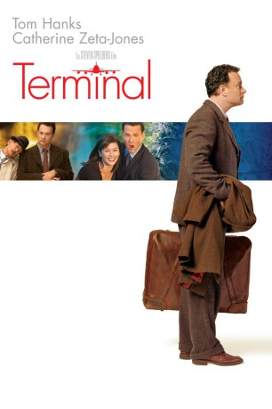

#596 Terminal
Alternativ: The Terminal
 
 IMDB-Wertung: 7.3 / 10
IMDB-Wertung: 7.3 / 10  Metascore: 55
Metascore: 55 
Nach seiner Ankunft am New Yorker John-F.-Kennedy-Flughafen gerät der Osteuropäer Viktor Navorski in die Mühlen der Bürokratie. Durch einen Staatsstreich in seinem Land plötzlich heimatlos geworden, darf Navorski nicht in die USA einreisen. Gefangen in der hektischen Welt des Flughafens versucht Viktor, sich ein Zuhause zu schaffen. Er findet Freunde und einen Job, verliebt sich und lernt schließlich Amerika kennen...
Jahr: 2004
Dauer: 128 Minuten
FSK: 0
Land: USA Studio: DreamWorks DistributionTonspuren: DD5.1 - ,
Untertitel: Deutsch,
Auflösung: 1080p (1920x1040) Größe: 11161 MB
Genre: Komödie, Drama, Liebe
Regisseur:  Steven Spielberg
Steven Spielberg
Drehbuch: Andrew Niccol, Sacha Gervasi, Sacha Gervasi, Jeff Nathanson
Soundtrack: John Williams
Darsteller:
 Tom Hanks als Viktor Navorski
Tom Hanks als Viktor Navorski Catherine Zeta-Jones als Amelia Warren
Catherine Zeta-Jones als Amelia Warren Stanley Tucci als Frank Dixon
Stanley Tucci als Frank Dixon Chi McBride als Mulroy
Chi McBride als Mulroy Diego Luna als Enrique Cruz
Diego Luna als Enrique Cruz Barry Shabaka Henley als Thurman
Barry Shabaka Henley als Thurman Kumar Pallana als Gupta Rajan
Kumar Pallana als Gupta Rajan Zoe Saldana als Dolores Torres
Zoe Saldana als Dolores Torres Eddie Jones als Salchak
Eddie Jones als Salchak Jude Ciccolella als Karl Iverson
Jude Ciccolella als Karl Iverson- Corey Reynolds als Waylin
 Guillermo Díaz als Bobby Alima
Guillermo Díaz als Bobby Alima- Rini Bell als Nadia
- Stephen Mendel als First Class Steward
 Michael Nouri als Max
Michael Nouri als Max- Bob Morrisey als Government Inspector
 Sasha Spielberg als Lucy
Sasha Spielberg als Lucy- Susan Slome als Woman with Cart
 Mik Scriba als Transportation Liaison
Mik Scriba als Transportation Liaison Carlease Burke als Brookstone Manager
Carlease Burke als Brookstone Manager- Stephon Fuller als Swatch Manager
 Dan Finnerty als Discovery Store Manager
Dan Finnerty als Discovery Store Manager- Anastasia Basil als La Perla Employee Julie
- Lydia Blanco Garza als Burger King Employee
- Kevin Mukherji als Soundworks Dave
 John Eddins als CBP Officer
John Eddins als CBP Officer Kenneth Choi als CBP Officer
Kenneth Choi als CBP Officer Cas Anvar als CBP Officer
Cas Anvar als CBP Officer Conrad Pla als CBP Officer
Conrad Pla als CBP Officer- Eddie Santiago als Man on Phone
- Dusan Dukic als Young Drug Trafficker
 Mark Ivanir als Cab Driver Goran
Mark Ivanir als Cab Driver Goran Scott Adsit als Cab Driver
Scott Adsit als Cab Driver- Robert Covarrubias als Janitor
 Michelle Arthur als Field Reporter
Michelle Arthur als Field Reporter- Sandrine Kwan als Passenger
- Carl Alacchi als Passenger
- Hayati Akbas als Turkish Man , uncredited
- William Alva als Chess Player , uncredited
 Michael Arthur als Times Square Cop , uncredited
Michael Arthur als Times Square Cop , uncredited- Cass Asher als Ticket Counter Passenger , uncredited
- Claudia Barroso als Passenger , uncredited
- Alex E. Burns als Security Guard , uncredited
- Dan Chase als Verizon Wireless Employee , uncredited
- Chad R. Davis als Dad , uncredited
- Susan Engel als Stewardess , uncredited
 Jerald Garner als Food Court Patron , uncredited
Jerald Garner als Food Court Patron , uncredited Justin Rodgers Hall als Haitian Passenger , uncredited
Justin Rodgers Hall als Haitian Passenger , uncredited- Amber Havens als Flight Attendant , uncredited
- Christopher John Karr als Starbuck's Patron , uncredited
Datei: X:\2004(N-Z)\Terminal (2004, FSKo.Al., 1920x1040).mkv seit 12.03.2015
Festplatte: HD 2003-2004-2005(A-F)
 Es gibt insgesamt 54 Filme in der Gruppe '2004(N-Z)'
Es gibt insgesamt 54 Filme in der Gruppe '2004(N-Z)'